本人的游戏名(其实我很多游戏都是这个名字)
在1.10版本从[多玩我的世界盒子]知道了mc，并热爱至今
从盒子的各种视频了解了mc的多种玩法，对当时的[沙子电路]很感兴趣，延伸到现在的红石、指令，甚至现在的编程、html
后来网易推出了中国版，多玩逐渐衰落，我也转到了中国版，并制作了多张地图(下图是我的第一张正经pvp+pve地图，现在地图存档已经被误删了)
我用这张地图和其他玩家联机，逐渐结识了很多会红石、指令的dalao
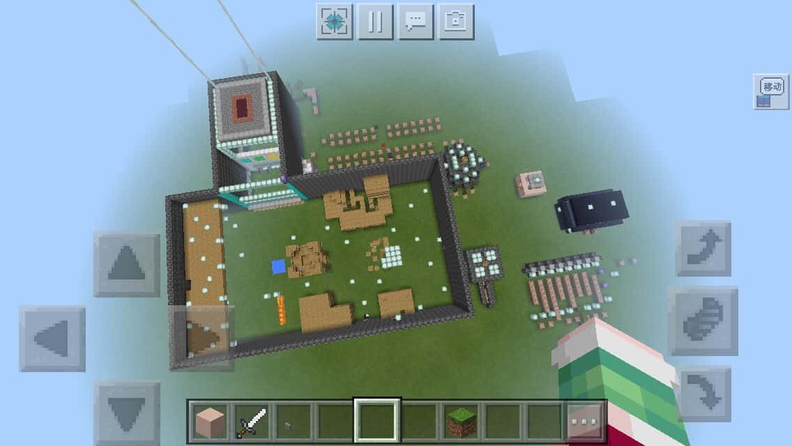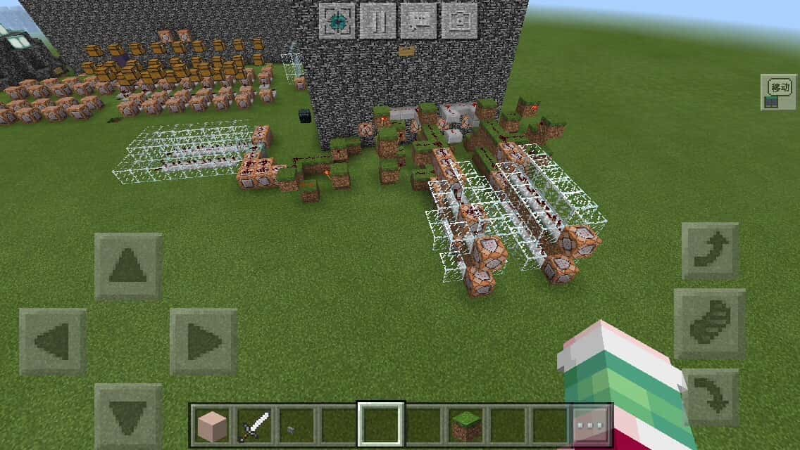
一次偶然，我进入幻想天域服务器参观。当时幻想天域还是一个正在建设中的初代服务器，我提出了亿些建议，用实力获得了腐竹木木和op们的支持。从此我加入了当时还没成立的「DE寻梦工作室」，并在初一暑假和op们建设了第一代服务器
后来服务器逐渐繁荣，迭代了几次，我因初二学业问题少参与服务器了一年，错过了服务器崛起阶段(不过我偶尔也会在午夜参观一下服务器)
在我初三再次进入服务器时，我又遇到了腐竹。此时我们技术已经到了中国版上游，我们再一次合作了服务器和几张地图(现在也能看到我们工作室上我参与了多张地图)
再次期间我把自己的巅峰之作[红石研究所]投给了工作室，获得了1w多的现在量(虽然我觉得是因为投的时机不对，赶上了暑假尾声)
内含大量红石：33门、44门、数显、隐藏楼梯门、tnt炮、2次&3次递归……
指令：以清除全图点燃的tnt为核心的命令中枢、烟雾弹、经验/物品/记分板商店、记分板抽奖机、旗帜制作教程……
建筑：二层别墅、乡间小屋、帆船、缩小版海底神庙/沙漠神殿/末地城、各种家居室内布景、22/33/44面积小屋……
时光如流水，在初三毕业后我们最后一次在服务器四代相聚————之后服务器就停服删档了，服务器时代告一段落
之后我在假期又参与了几张地图，肝了n个晚上，但我感觉自己的精力和对游戏的热爱都不如初一的暑假了。开学后，我们也默契的停止了工作室活动
最后展示一下现实里我的mc[周边]：
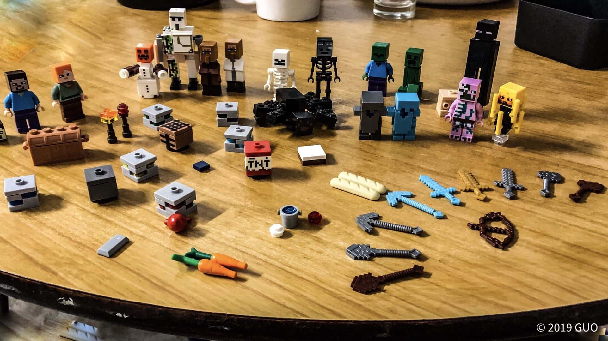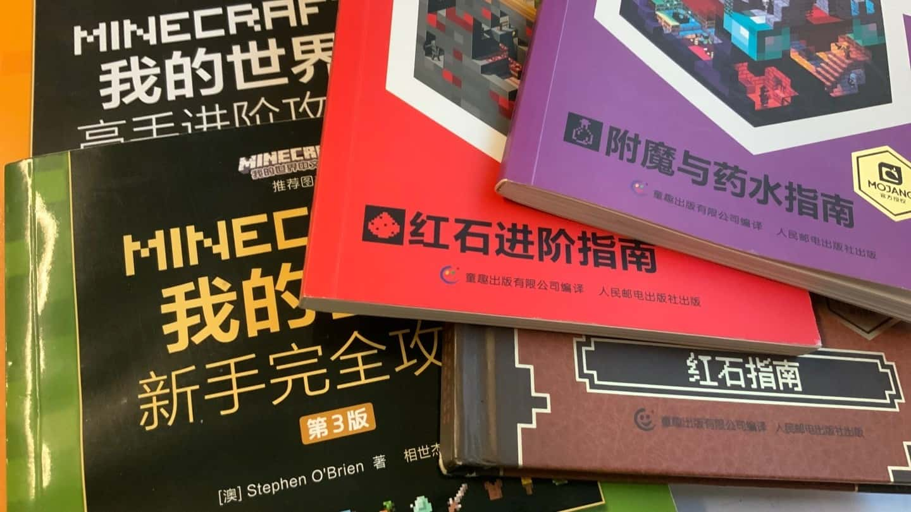
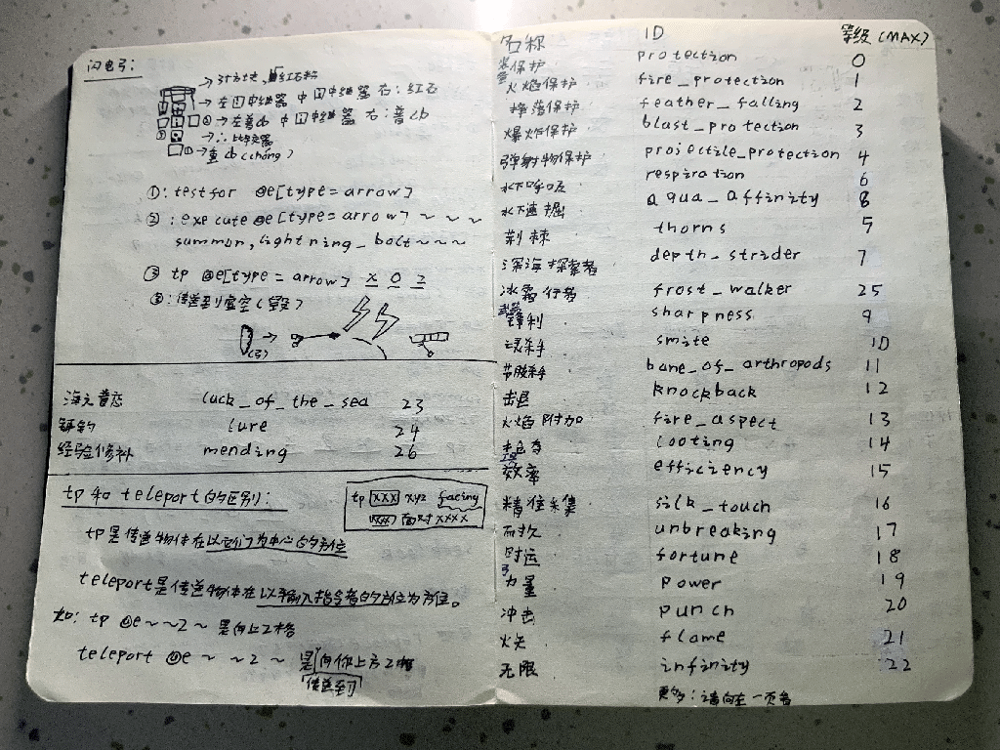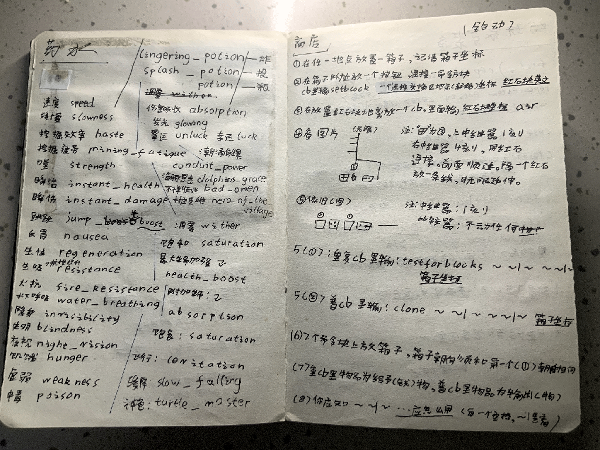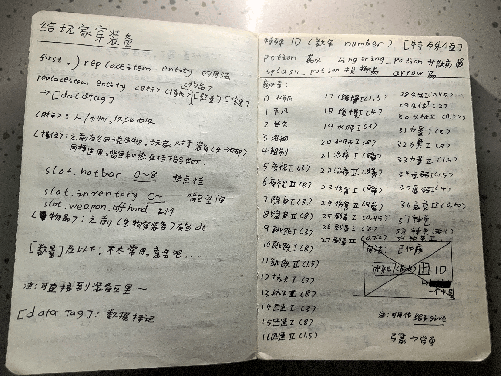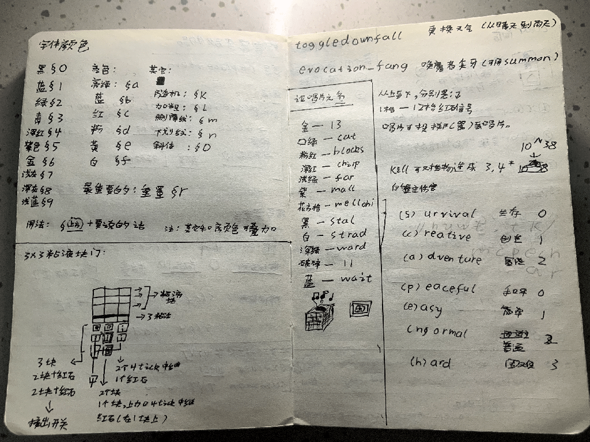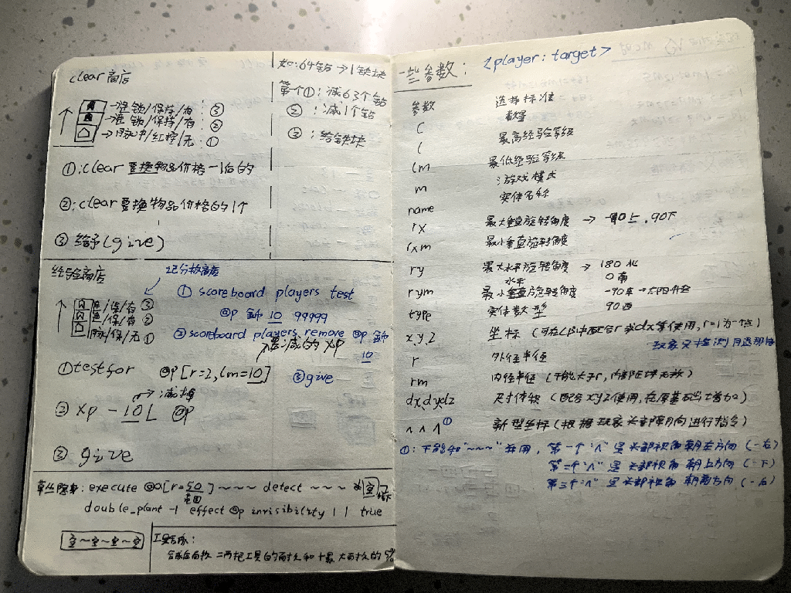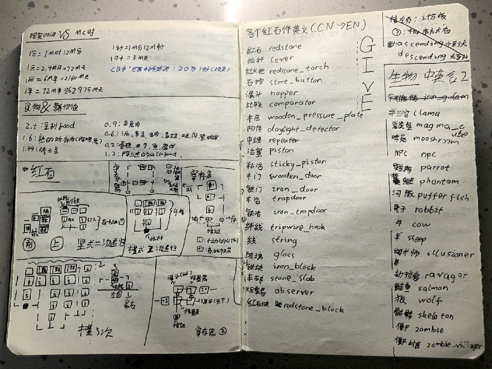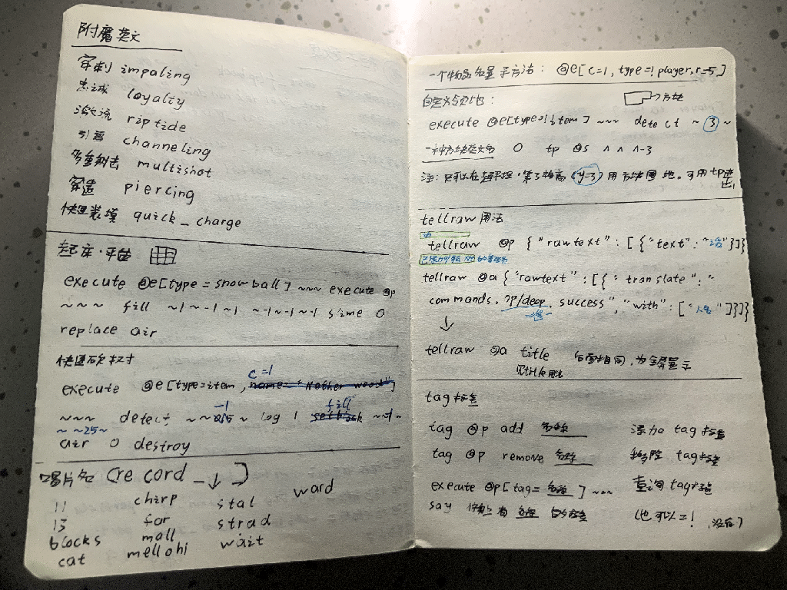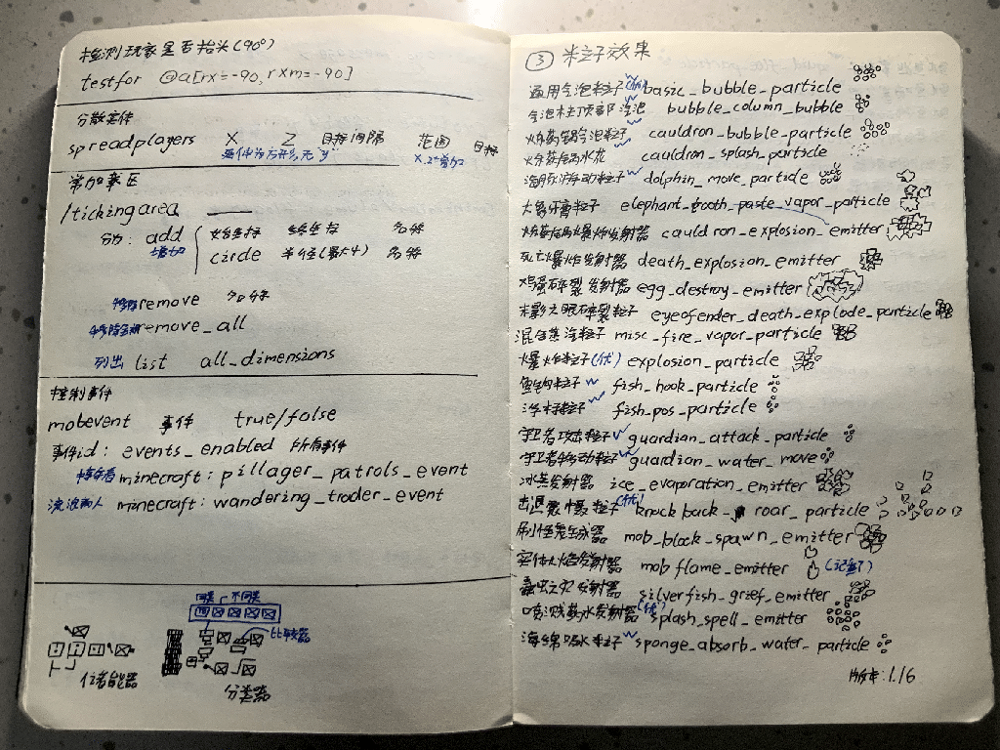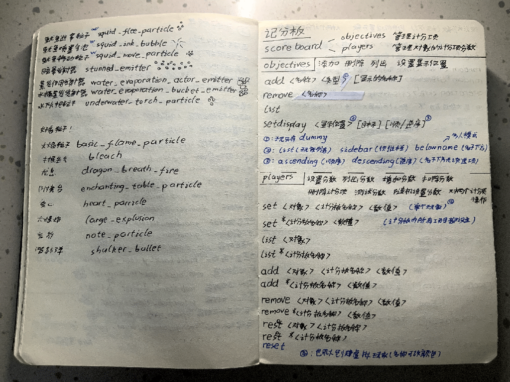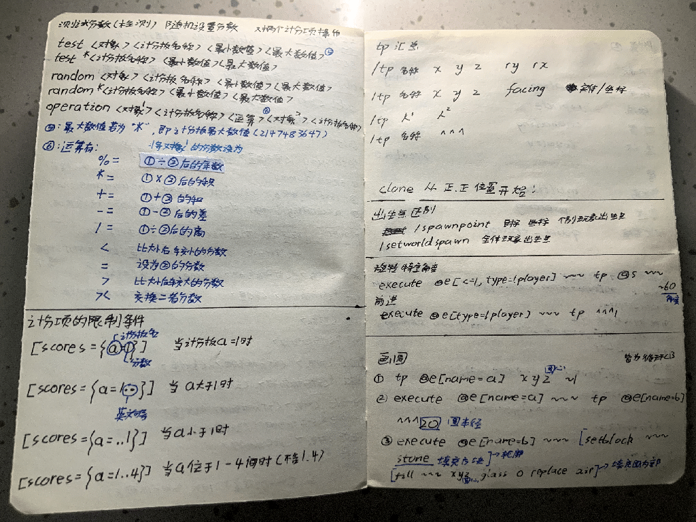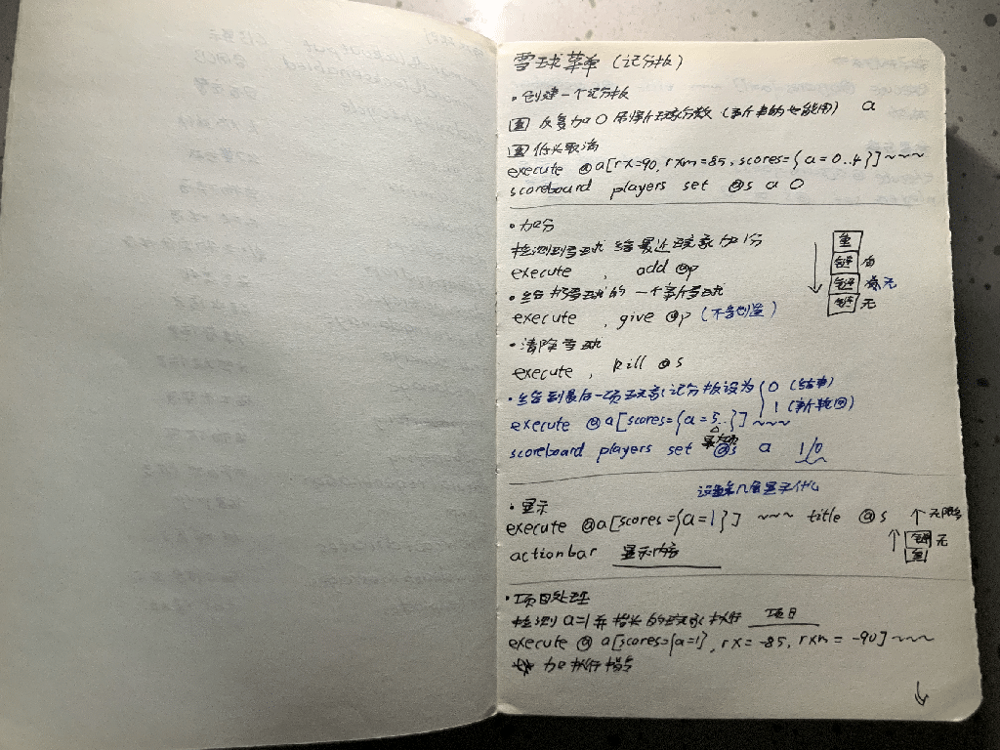
一本初中写的mc指令书(BE版)
里面记录了大量指令用法、示例
到现在依然有很多属于“高科技”范畴